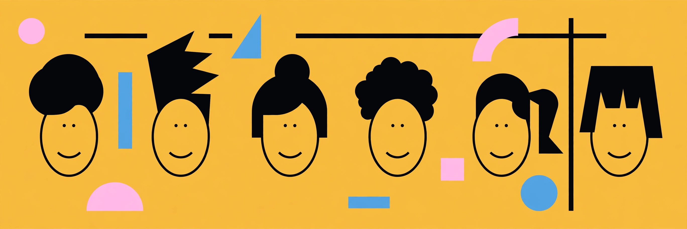
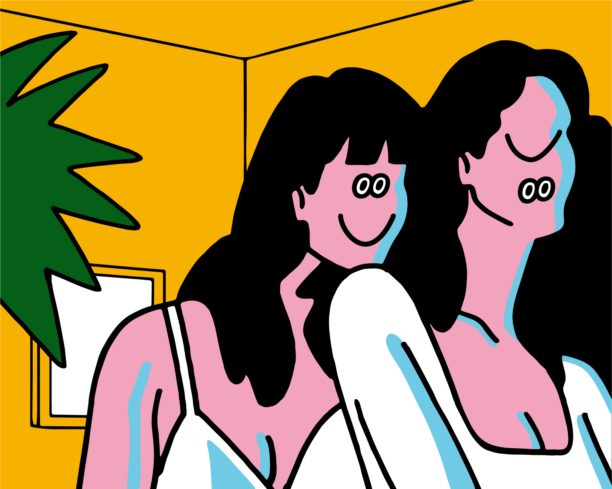
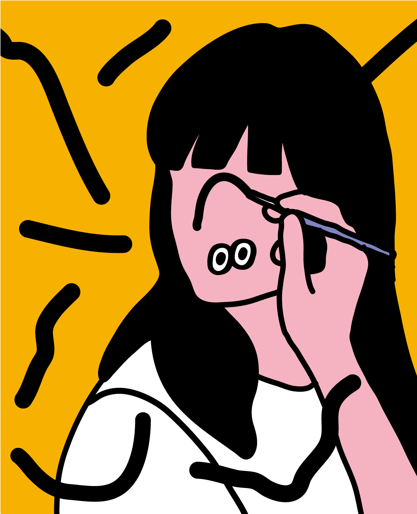
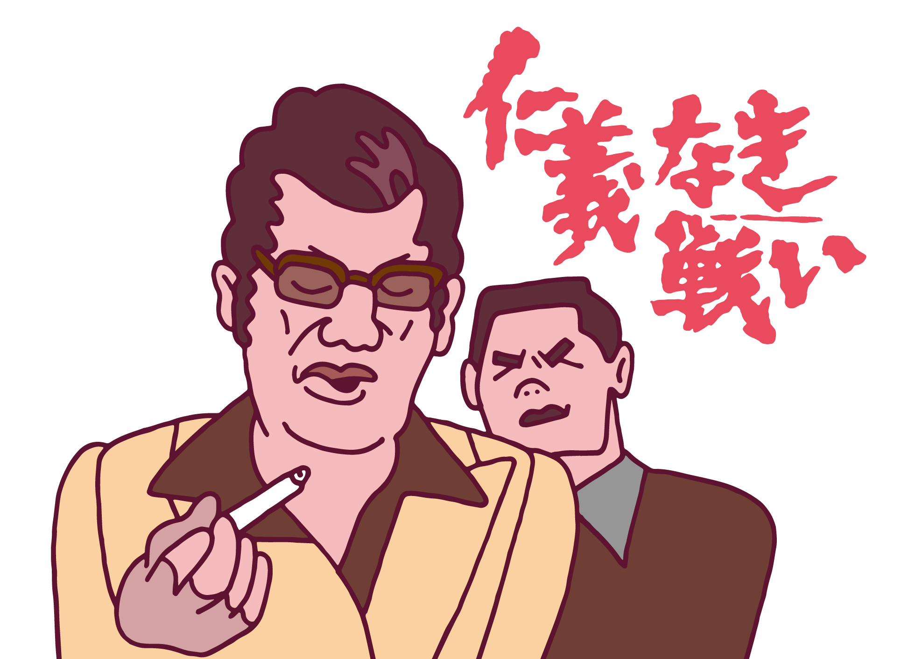
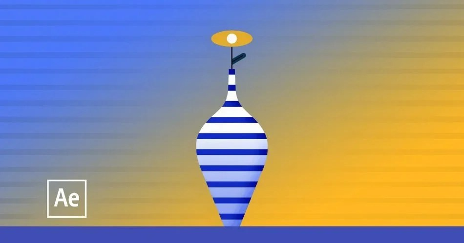
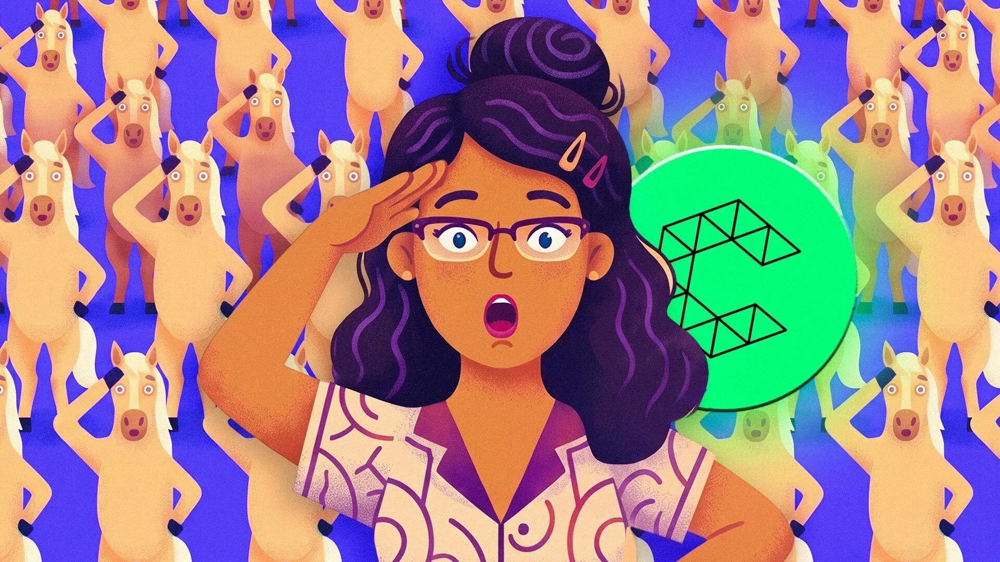

ニュース
今日のハイライト
- トップは慈善団体Les Restos du CœurのCGスポット『The Divide』。地面を走る巨大な亀裂で社会の分断を可視化し、ストップモーション風の手触りで「つなぎ直す」側へ反転させる。
- 広告＋モーション系は5本で約7割。ノミの悪役を主役にしたUnreal Engine製キャラクター広告と、F1タイトルのCGメイキングという、対照的な2本の作り方が並んだ。
- その他は、建築スケッチから生まれた美術館ブランディングと、既存素材を縫い合わせる「フランケンシュタイン型」グラフィック実践。今日の通奏低音は「分断と、縫い合わせ」。
1. 地面の亀裂が社会の分断を描く、慈善スポット『The Divide』
パリの代理店ChangeとMathematic、Thomas Bertrand監督による、慈善団体Les Restos du Cœurのスポット。「貧困の中では、自由・平等・友愛を本当に選べるのか」という問いを、街や家を裂く巨大な亀裂として可視化した。3Dアニメーションにストップモーション風の手触りを与え、AIを使わずに質感を作る宣言も明記。最後はアニメーションから実写へ移り、支援する人間の姿に戻る構成で、比喩を現実へ着地させる。
2. ノミの悪役「Captain Itch」を主役に、Unreal Engineで作る広告
SuperBlimp（Antonio Milo監督）による、Elancoのノミ駆除薬Advantageのキャンペーン。製品説明ではなく、招かれざる同居人ノミ「Captain Itch」という1体のキャラクター設計に全体を懸けた。威圧感と間抜けさを同居させる造形の調整過程が詳しく、作品はコンセプトスケッチから放送マスターまでUnreal Engine 5で一貫制作。リアルタイム・パイプラインで放送品質のキャラクター広告を作る実例として読める。
3. F1 2026 オープニングタイトル、そのCGの作り方
DissEmbargoが、Formula 1のインハウス・クリエイティブチームと作った2026年オープニングタイトルのメイキングを公開。2025年版を土台に、数か月かけてペーシング、編集構造、アートディレクション、CGの統合を詰めていく過程を見せる。完成品ではなく「スタジオとインハウスが共通の視覚方向をどう育てるか」という協働の記録として、タイトルシークエンス制作の参考になる。
4. 紙の上で踊り続ける、Catherine Lepageの音楽フィルム
モントリオールのイラストレーター／アニメーターCatherine Lepageによる、Oseesの楽曲に合わせた自主制作フィルム『Dancing on Osees』。全編を紙に描き、個性的なキャラクターたちのダンス・サイクルを連ねる。STASHは「AI生成の応募が増える中で、こうした生の手仕事が新鮮」と評する。昨日の号でも触れた「手描きの証明」という流れを、広告ではない純粋なモーション作品の側から裏づける1本。
5. shots Awards EMEA 2026発表、アニメーション／VFXの年間ベストを読む
11月18日にロンドンで開かれたshots Awards EMEA 2026の受賞結果。アニメーション3DのゴールドはIntermarché『Unloved』、モーションデザインはPlaygrounds In Motionのタイトル、VFXはHonda『Your Dreams Engineered』、ミュージックビデオはRosalía ft. Björk and Yves Tumor『Berghain』。部門ごとのゴールドだけでも追えば、今年の欧州広告映像の水準と傾向が一望できる年間リスト。
6. フォスターの設計スケッチとOtl Aicher、美術館の新しい顔
North Designによる、英・セインズベリー美術館（Sainsbury Museum and Art Centre）のリブランド。1978年竣工のノーマン・フォスター初期作について、アーカイブに残る構造鉄骨のスケッチから3つの連なる形を抽出してマーク化し、Otl Aicherの「知的な幾何学」を参照した。書体は等幅の特注SM Baumer Monoで、整然と並ぶ「Functional」と間隔が揺らぐ「Expressive」の2モードを持つタイポグラフィ・エンジンとして設計。色も建物の素材（アルミ・鉄骨・ガラス・コンクリート）から取る。建築そのものをアイデンティティの素材にする手つきが学べる。
7. 既存素材を縫い合わせる「フランケンシュタイン型」グラフィック、Vivid Cereal
ベルリンを拠点とするアートディレクターNika Belskayaの実践Vivid Cerealを紹介する記事。タイポグラフィ、ポスター、イラストレーション、写真を横断し、アーカイブやパブリックドメインの画像に実験的な参照を混ぜて「少し自分の魔法を足す」という手法を、本人が「フランケンシュタイン的」と呼ぶ。ジョージアのルーツを引くTシャツや、ドキュメンタリー料理本のアートディレクションなど、素材の出所を隠さず継ぎ目を見せるグラフィックの作り方として面白い。
特集 ― デザイン特集マガジン・第8号

目と口だけで、人は立つ
――FACE（face_oka）の似顔絵の設計
一目で分かるのに、描かれているのはほとんど何もない。FACEの顔は、楕円に近い輪郭、ピンクの平色、黒く塗りつぶした髪、そして小さな2つの目と、弧を描く口だけでできている。鼻も、眉も、頬の陰影もない。それなのに、並べて見ると一人ひとりが違う人に見え、似顔絵として本人に重なる。この「少なさで成立させる」設計が、FACEの仕事の芯である。
勉強ポイント
- 固定パーツと可変パーツを分ける：目と口という署名は固定し、輪郭と髪型だけを変えて個体差を作る。キャラクター設計でも、変えない記号を1つ決めると量産と識別が両立する。
- 似せる場所を1カ所に絞る：FACE本人が語る似顔絵のコツは「輪郭と髪型」。全部を似せようとせず、観客が最初に見るシルエットに情報を集中させる。
- 反転という小さな破壊でマンネリを壊す：同じ顔に飽きたとき、彼は新しい顔を作らず、目と口を上下反転させた。既存の記号を1操作だけずらす実験は、モーションのバリエーション作りにも転用できる。
1. 署名は「目と口」— 決めたら、使い続ける
TOKIONのインタビュー（2020年）で、FACEは自分の顔のモチーフについて、高校時代から似た形を描き続け、Instagramに投稿し始めた頃に「クライアントに顔を覚えてもらうため、できるだけ使った」と振り返っている。当初はマーク・ゴンザレス（Gonz）に近いと言われるほどシンプルだった形が、描き続けるうちに現在のバランスに収斂した、という経緯も語られている。
ここで重要なのは、目と口が「上手い絵」の結果ではなく、反復で獲得された記号だという点だ。ピンクの肌も偶然ではない。BAM（Boundless Art）のインタビューでは、ジェームス・ジャービスのピンクの使い方や、P.A.M.（Perks and Mini）の蛍光ピンクのキャラクターからの影響を本人が挙げ、特定の人種に属さない中間の色を選んだと説明している。つまり色も線も、意図して削った結果である。

2. 似顔絵は、輪郭と髪型で決まる
では、固定された目と口で、どうやって「その人らしさ」が出るのか。FACEの答えは明快で、「特に意識している点はないが、輪郭と髪型が重要。輪郭と髪型が似ていれば、大体その人に見える」。イベントやフェスで観客の似顔絵を描いた経験が、線で対象を単純化する訓練になったとも語っている。幼少期に『ドラゴン・ボール』『幽☆遊☆白書』『SLAM DUNK』などを模写し続けた蓄積が、多様な輪郭と髪型を頭の中で引ける下地になっている、という自己分析も同じインタビューにある。
映像の現場に置き換えると、これは「情報の置き場所」の設計である。細部を全部描くほど似るのではなく、観客が0.5秒で掴む外形にこそ識別情報が宿る。太い黒線と平色は、その外形をどんな小さなサイズでも、Tシャツでもステッカーでも崩れない強度にしている。

3. 同じ顔への飽きと、反転の発明
長く同じ記号を描けば、飽きも来る。FACEは「同じ顔を描くのに疲れた時期があった」と率直に語り、その解決として選んだのが、目と口の上下反転だった。反転しても笑っているようにも怒っているようにも見え、バランスが意外に良かった——この発見が、1つの記号の中に表情の幅を持たせる装置になっている。顔全体のバランスに応じて目の位置を微調整する、という職人的な調整も添えられている。
近年のインタビューでは、テーマとして「平和ボケした日本人」を掲げ、ポップな顔の裏に「隠れた危機感」を感じてほしいとも語っている。会社名「Picabia」が、様式を持たず時代ごとに作風を変え続けたフランシス・ピカビアに由来することも明かされている。固定した署名を持ちながら、その内側では反転、油彩、パペットシリーズ「THE KIDDING HEADS」へと表現をずらし続ける——署名は牢ではなく、実験の土台として使われている。

4. ストリートから来た「自分のTシャツ」への欲望
経歴も、この記号の使われ方を裏づける。大学を2年で中退し、STUSSYで働いた時期、KAWSやバリー・マッギーに象徴される「自分のTシャツを出すことが成功の証だった」空気の中で描き続けたとBAMのインタビューで語っている。キース・ヘリングを含め、グラフィティでありながらキャラクターを作る作家たちへの憧れも挙げられている。その後、RichardsonやSNEEZE Magazineといった誌面、HUMAN MADE®︎やadidasとのコラボレーションへ広がった仕事の中心に、ずっと同じ目と口がある。
削ることは、弱さではない。FACEの顔が証明しているのは、要素を目と口まで減らしても、輪郭と髪型に情報を寄せ、色を1色決め切れば、人は立つし、ブランドにもなるということだ。
出典
- 「A simple face eloquently appeals to the artist “face”」TOKION, 2020-09-11 — https://tokion.jp/en/2020/09/11/face-tokion/
- 「[Interview] Surpassing His Idols: Face Oka's Current Position – Part 1」Boundless Art (BAM) — https://en.boundless-art.com/?p=484
- 「Katsutoshi Nishimoto Series. What should an artist be like?」HOUYHNHNM — https://www.houyhnhnm.jp/en/feature/609247/2/
AE／Cavalry チュートリアル・表現コーナー
レイヤーを増やさず、仕組みで片付ける
AEはマットとプリコンプを1レイヤーに畳むシェイプ技法、Cavalryはキーフレームを増やさず量産する4つの型
マットもプリコンプも、1レイヤーの中で完結させる ― Advanced Shape Layer Techniques in After Effects

アルファマットとプリコンプで散らかったタイムラインを、シェイプグループ＋Merge Paths＋パスのエクスプレッションで「単一レイヤーのプリコンプ」に置き換えるチュートリアル。目の瞬きから花瓶の内側マスクまで、実例で組み立て方を示し、プロジェクトファイルも付く。
表現ポイント：核はMerge PathsのIntersectで“レイヤー内マスク”を作る発想。連続ラスタライズや3D化でマットが壊れる事故を避けられ、アイコンや図形がはみ出さず動くインフォ／UIモーションで修正にも強い。
キーフレームは源流にだけ打つ ― 4 Cavalry Setups to Animate More With Fewer Keyframes

1つのモチーフから、①Duplicatorで繰り返しパターン、②StaggerをShape Time Offsetにつないでずらし出現、③Distribution切替で横帯／グリッド／円形バッジへ展開、④Randomは角度±12°など狭い範囲で“制御されたランダム”——の4セットアップを、手順付きで解説する9分記事。ダウンロード不要で試せる。
表現ポイント：核は「源流のアニメーションと、複製・タイミング・ランダムを分離する」設計。個数を変えても打ち直しにならないため、背景パターンやタイトル周りの量産、クライアントの「あと少し増やして」に即応できる。
今日試すなら：まずCavalryのセットアップ2から。Staggerのつなぎ方ひとつで、手持ちのパターンがそのまま“順に現れる”演出に変わる。